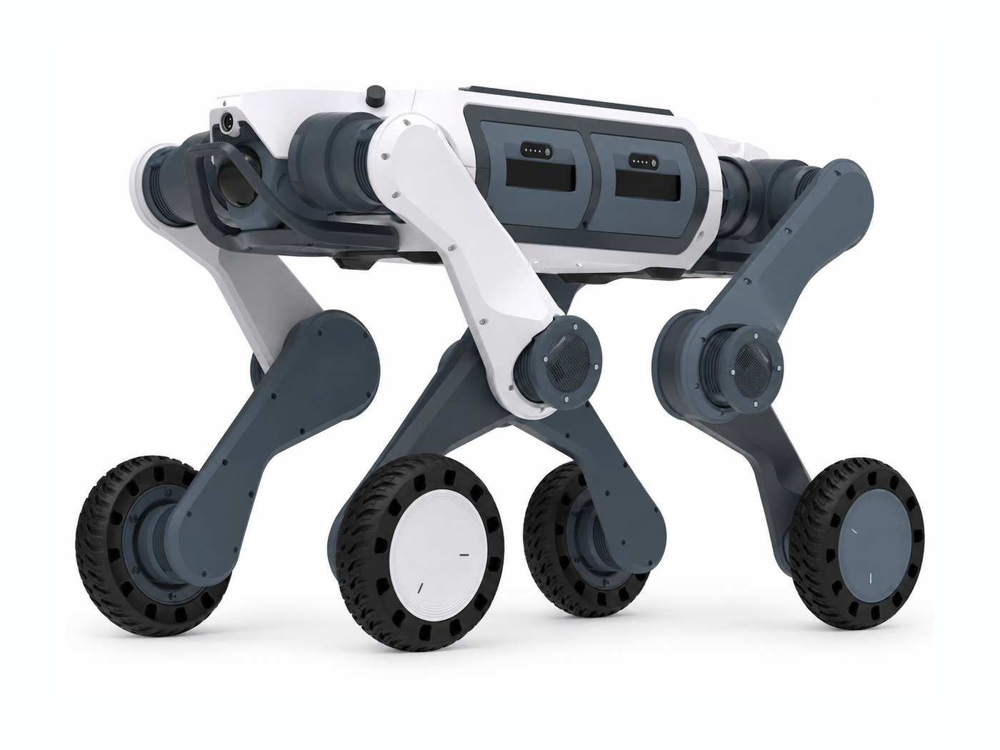
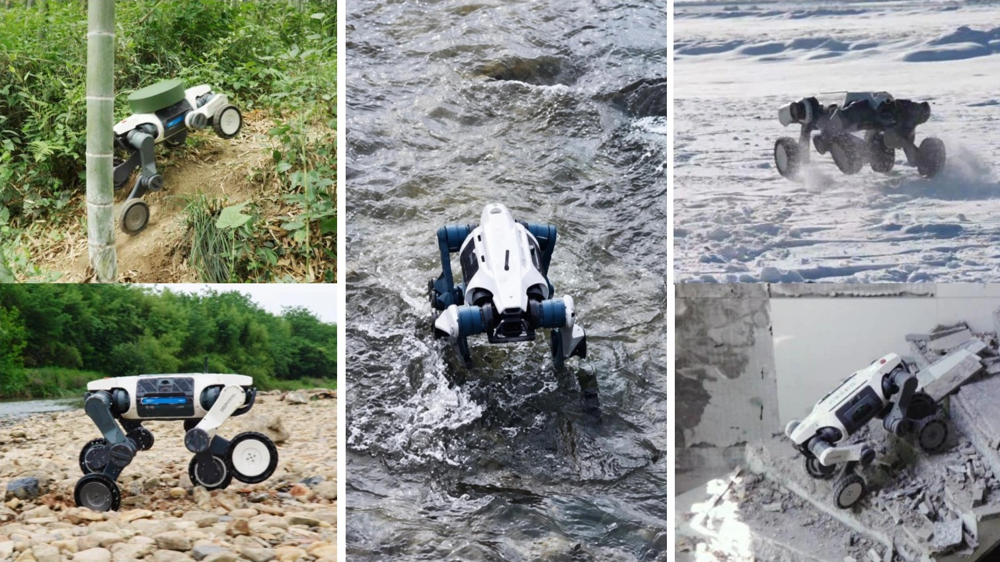

DEEP Robotics
15 models
11 quadrupeds
Year, newest first


2 humanoids
Year, newest first


2 robot AI models
Year, newest first


Robot photos are the manufacturers’ own.
May we measure visits with Google Analytics? It sets no cookies until you accept.
Year, newest first
Year, newest first
Year, newest first

Robot photos are the manufacturers’ own.